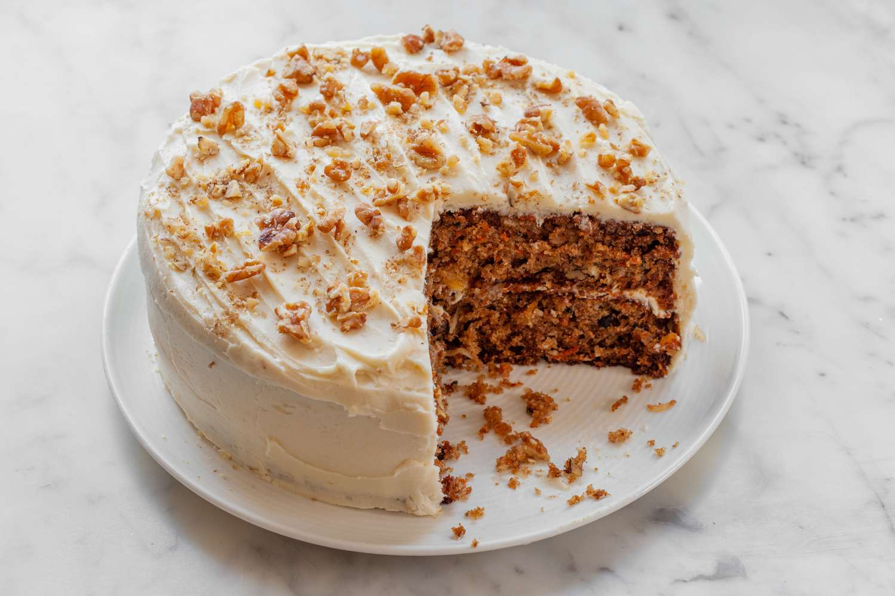

Carrot cake

🥕 This carrot cake recipe with a homemade cream cheese frosting is my favorite, and I have tried many carrot cakes! It's moist, easy to make with grated carrots, and so delicious!🥕
🥕Our top-rated carrot cake recipe is moist, light, fluffy, and topped with a rich cream cheese frosting. What's not to love?🥕
Ingredients
- Sugars
- Oil
- Eggs
- Vanilla
- Leaveners
- Cinnamon
- Salt
- Carrots
- Pecans
- Butter
Steps
- Make the batter: Beat the wet ingredients together, then mix in the dry ingredients. Stir in the carrots and fold in the pecans.
- Bake the cake: Pour the batter into the prepared cake pan or pans. Bake in the preheated oven until a toothpick comes out clean.
- Frost the cake: Beat the frosting ingredients together until smooth and creamy. Stir in the pecans. Frost the (completely cooled) cake.